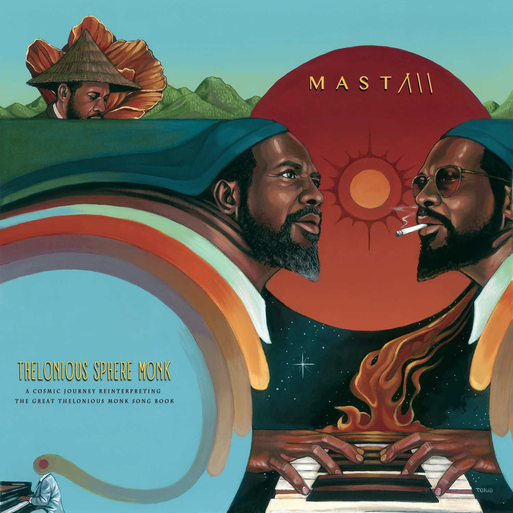
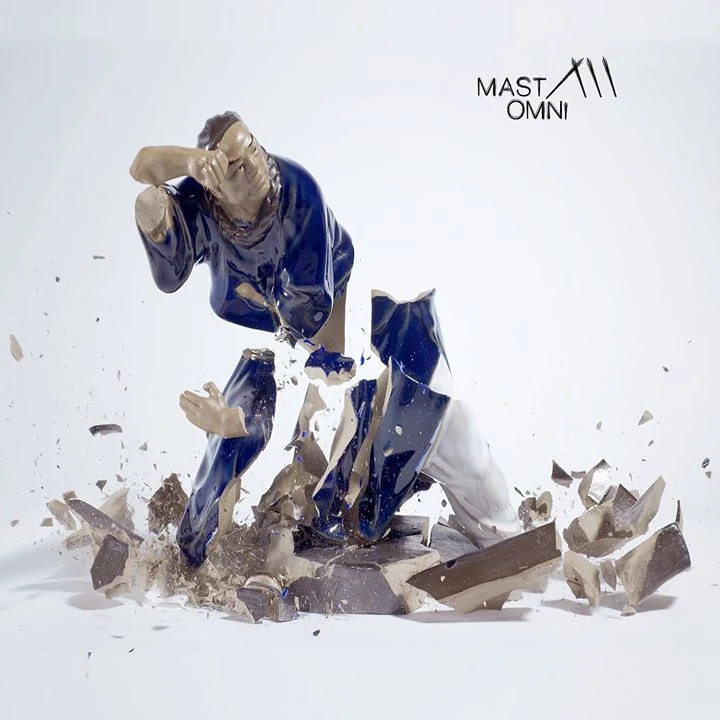
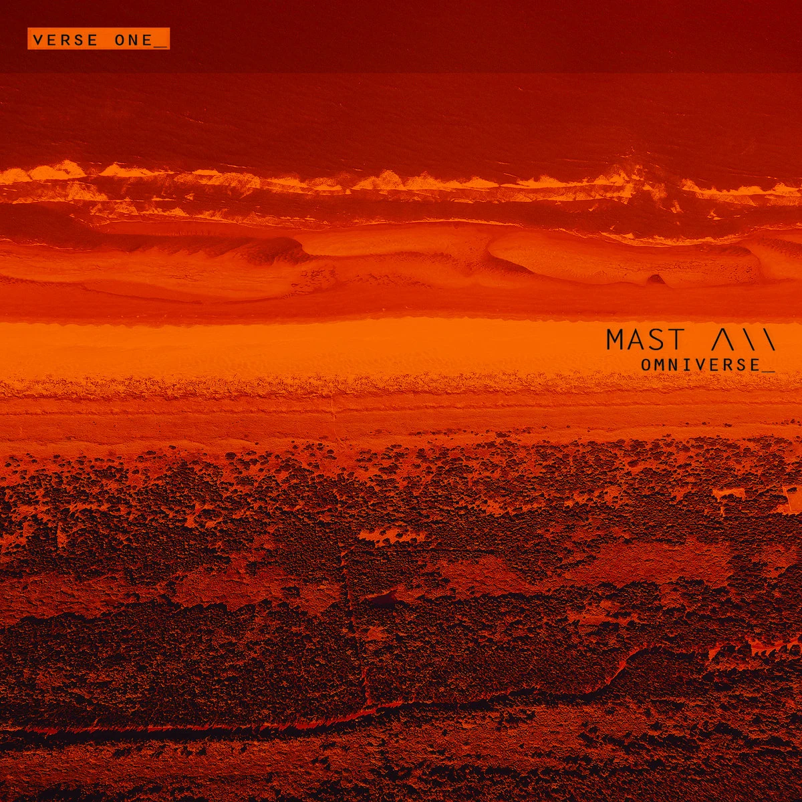

Latest release
Battle Hymns of the Republic
A spiritual protest for unity, equality, facts, justice and empathy.
Discography
Composition without borders—jazz, electronic music, orchestration, beats and improvisation.
Latest release
A spiritual protest for unity, equality, facts, justice and empathy.

2018 · LP
A 16-track cosmic reinterpretation of the Thelonious Monk songbook.

2016 · LP
A conceptual album shaped as a three-act play, released via Alpha Pup Records.




EP
A MAST interpretation of Coltrane’s spiritual masterwork.